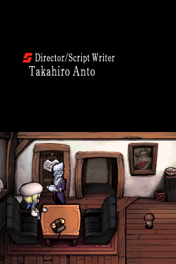
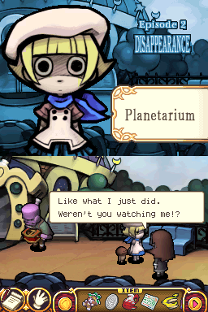
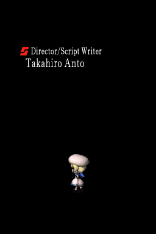
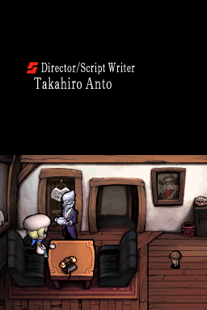
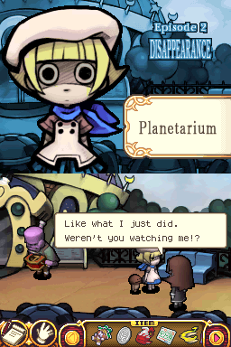
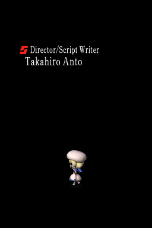

Touch Detective

Complete on 2022-06-26
2 / 5
Release Date: Oct 24, 2006
Meta Score: 60
Screenshots
 





Notes
Touch Detective is a pretty straight point and click adventure title. It's one of the lowest metacritic rated games, but I stuck it in (along with the sequel) as I've played bits before and I wanted to have a go at experiencing it properly.
Weak use of DS features generally. Plays out almost entirely on the touch screen with touch based gameplay, but the top screen is almost entirely unused. Basically just has a close up of the main character reacting to events and a label telling you where you are.
The gameplay is simple point and click stuff, talk to people (with simple dialogue trees and short conversations), find and examine items, combine them together, and use them to solve puzzles in the world. The design goes off the rails very quickly, and even the first case descends into literal dream logic which makes almost no sense. There doesn't seem to be a way to solve a lot of things in the game without a lot of trial and error or guide usage. There's also some acausal behaviour where a character won't appear to advance the plot unless you've hit the right arbitrary triggers to continue.
Storywise, you play as a young girl who's inherited her family's detective agency, and you need to solve 4 cases to be recognised by the Great Detective Society. You proceed to solve the requesite 4 cases at which point the game ends. Nothing too wild going on there but it's an excuse to have some episodic mysteries to solve.
Graphically and thematically I quite like the game. It's got this "dark cartoon", almost Tim Burtonish style to it which I think works. The story and cases are mostly cute and innocent with surreal twists to them.
The game is pretty short with the 4 cases taking roughly the same amount of time rather than lengthening later on. There are only a handful of areas in the game too (even compared to Hotel Dusk's tiny hotel last time).
One particular dialog broke my mind. The "correct solution" was to say "no" when asked if you know who did it. Then after a few lines of dialog the main character says they do know who did it and you get to pick from a list of options. wat. That made no sense at all. That was in the 4th case, which might be the most nonsensical of all, with the Circus Master who is like an insane dementia case and the culprit who just pops up and admits it once you've smashed your head into a wall.
Overall, a bit of a lacklustre adventure game, slightly saved by its general style.